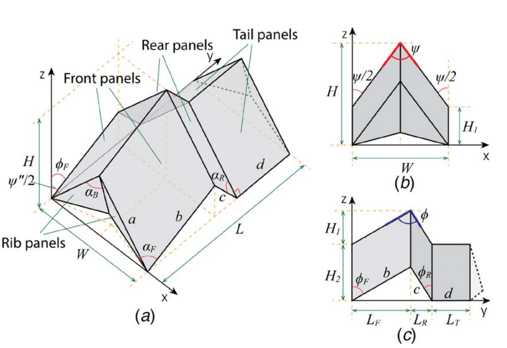
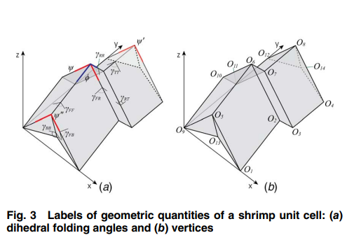

Bio-inspired Origami Metamaterial with Metastable Phases through Mechanical Phase Transitions
|   | Structural instability, once a catastrophic phenomenon to be avoided in engineering applications, is being harnessed to improve functionality of structures and materials, and has been a catalyst of substantial research in the field. One important application is to create functional metamaterials that deform their internal structure to adjust performance, resembling phase transformations in natural materials. Prof. Ke Liu, Prof. T. Tachi, and Prof. G. H. Paulino proposed a novel origami pattern, named the Shrimp pattern, with application to multi-phase architected metamaterials whose phase transition is achieved mechanically by snap-through. The Shrimp pattern consists of units that can be easily tessellated in two dimensions, either periodically with homogeneous local geometry or non-periodically with heterogeneous local geometries. By tessellating these unit cells into an architected metamaterial, one can create complex yet navigable energy landscapes, leading to multiple metastable phases of the material. As each phase has different internal geometries, the metamaterial can switch between different mechanical properties and shapes.
The work was published in the ASME Journal of Applied Mechanics on March 16, 2021, and has won the ASME Meville Medal (the highest ASME honor for the best original paper published in all ASME Transactions during the two calendar years).
|